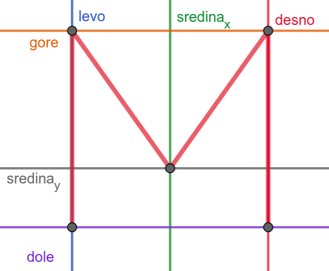
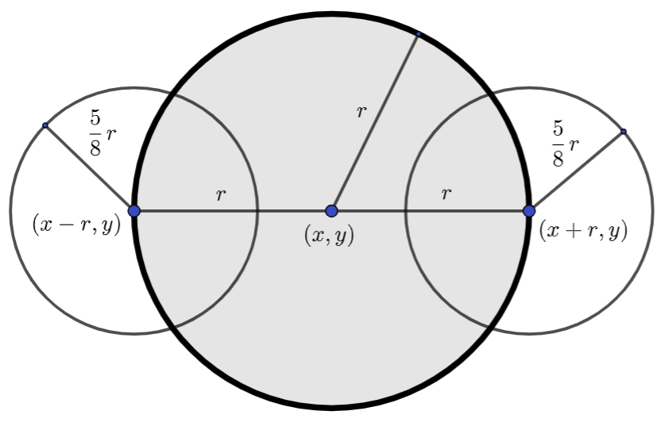

Релативно задавање координата и димензија¶
Повећавање и смањивање објеката¶
Често цртеж желимо да прилагодимо тако што ћемо га скалирати (смањити или повећати). Ако желимо да нацртамо двоструко већи круг, потребно је навести двоструко већи полупречник, а ако је потребно нацртати двоструко већи правоугаоник, потребно је навести двоструко већу дужину и ширину. Испробај ово на следећем цртежу тако што ћеш смањити димензије правоугаоника на 50, а полупречник круга на 25.
Као што видиш, објекти су се смањили, али круг више није уписан у правоугаоник и цртеж не изгледа више како би требало да изгледа (центар круга и горње лево теме правоугаоника су остали непромењени). Скалирање дужи и многоуглова је још теже, јер се у њима не користе димензије, већ само координате тачака.
Дакле, да бисмо смањили или повећали цртеж, потребно је да мењамо и димензије, али и координате које одређују положај објеката. Испробај шта би се десило када би сваки од бројева који се користе приликом цртања био помножен или подељен истим бројем.
- Цртеж ће се дупло смањити и помериће се ка горњем левом углу прозора.
- Тачно
- Цртеж ће се дупло смањити и остаће на истом месту.
- Покушај поново
- Цртеж ће остати исте величине и помериће се ка доњем десном углу прозора.
- Покушај поново
- Цртеж ће се дупло повећати и помериће се ка горњем левом углу прозора.
- Покушај поново
Q-77: Сви бројеви који се односе на координате и на величине у једном цртежу су подељени са 2. Како ће тиме да се промени цртеж?
Множењем свих аргумената функција истим бројем, дакле, успешно скалирамо цртеж, међутим, цртеж уједно бива померен, што је понекад непожељно. Скалирање цртежа уз задржавање положаја генерално није једноставно учинити, међутим, у наставку ћемо видети како да цртеже направимо тако да их лако можемо и померати и скалираити.
Израчунавање координата у односу на главну тачку и димензију¶
У досадашњим примерима смо у функцијама за цртање координате задавали навођењем конкретних бројевних вредности (на пример, 100, 50, 20). За такве цртеже рећи ћемо да су задати коришћењем апсолутних координата. У наставку ћемо видети да је често и лакше и боље да се координате представљају променљивама и то тако да се све координате израчунавају само на основу координата једне карактеристичне тачке коју ћемо називати главна тачка или сидро (енгл. anchor) и на основу димензије цртежа. То ће нам омогућити да цео цртеж померамо само изменама координата главне тачке и да га скалирамо само променом димензије, али и да лако нацртамо више идентичних цртежа чији се положај и величина може разликовати. За такве цртеже рећи ћемо да су задати коришћењем релативних координата.
Слово М¶

Напиши програм који помоћу дужи исцртава слово M.
Приликом цртања слова А координате смо очитали са цртежа и директно унели у програм. Сада ћемо нацртати слово М. Да би дужи биле лепо поравнате, потребно је да две горње тачке буду на истој висини и да две доње тачке буду на истој висини, да су две леве тачке на истој ширини и да су две десне тачке на истој ширини и да је средња тачка по ширини тачно на средини између левих и десних тачака.
{kind=link}
Ако мало боље проучимо положај 5 карактеристичних тачака можемо видети
да све оне користе само три могуће вредности координате \(x\) (на
пример, 50, 100 и 150) и само три могуће вредности координате
\(y\) (на пример, 50, 120 и 150). Ове вредности можемо представити
променљивама gore, dole, levo, desno, sredina_x и
sredina_y, које на почетку програма иницијализујемо (постављамо)
на одговарајуће вредности. Предност оваквог писања кода је у томе да
ако буде потребе да се промени положај или величина слова М можемо то
постићи изменом вредности променљивих којима су координате описане
(промена на једном месту). Прва усправна дуж која гради слово М
задата је координатама (levo, gore) и (levo, dole). Права
паралелна овој дужи описана је координатама (desno, gore) и
(desno, dole), а унутрашње дужи са (levo, gore), (sredina_x,
sredina_y) и (desno, gore).
Можемо отићи и један корак даље и све координате израчунати само на основу положаја једне карактеристичне тачке цртежа и његове димензије. На пример, за карактеристичну тачку можемо узети тачку у средини, у којој се спајају две косе линије. Тако одабране карактеристичне тачке цртежа називају се сидра.
Сада вома једноставно можемо да променимо димензију и положај слова
М. Поиграј се мало са вредношћу променљивих dim, sredina_x и
sredina_y и посматрај како се мења нацртано слово. Дакле, када је
цртеж нацртан релативно, у односу на неко сидро и димензију, он се
лако може померати по екрану и скалирати, само тако што му се промени
вредност сидра. Ово нам омогућава да цртање издвојимо у функцију која
као параметре прихвата координате сидра и димензију и тако можемо лако
нацртати неколико појављивања истог облика.
Облак¶
Круговима можемо нацртати и неке занимљиве облике. Нацртајмо сунце и облак на плавом небу.
Облак
Данас се мало наоблачило. На основу претходног програма дефинисаћемо функцију која исцртава облак на задатој позицији, задате величине, у задатој нијанси сиве боје, а затим ћемо је неколико пута позвати да бисмо нацртали неколико облака.
Приметимо да смо облак нацртали помоћу три круга и да су координате и полупречници ових кругова задати апсолутно, помоћу конкретних бројева. Да бисмо омогућили цртање неколико облака различитог положаја и величине, потребно је да пређемо на релативно задате координате. Природно је да за сидро узмемо центар средишњег круга, а да за димензију облака узмемо његов полупречник. Из претходног примера се може видети да се полупречник мањих кругова добија множењем већег полупречника са \(\frac{5}{8}\). Такође, видимо да су центри тих кругова на истој висини као центар великог круга и да се налазе на кружници. Стога, ако претпоставимо да велики круг има центар у тачки \((x, y)\) и да му је полупречник r, тада први мали круг има центар у тачки \((x-r, y)\), а други у тачки \((x+r, y)\) и оба имају полупречник \(\frac{5r}{8}\).
{kind=link}
На основу овога можемо једноставно дефинисати функцију која црта облак и затим је неколико пута позвати.
Најважније из ове лекције¶
Приликом смањивања и повећавања објеката, важно је имати у виду да се не поремете њихови међусобни односи и положај на екрану
Главни задатак релативног представљања координата и димензија је у томе да се све димензије и координате представе у односу на неку референтну тачку (сидро)
Важно је да се све време приликом писања програма са релативним координатама и димензијама размишља о томе да желимо да уопштимо код који пишемо тако да касније можемо да га искористимо без много модификација - када напишемо функцију за цртање неког облика, тај облик можемо лако позвати у различитим величинама и позицијама. Много више времена бисмо морали да потрошимо да сваки појединачни облик цртамо засебно.